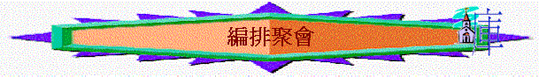

引言---林前１１：１７
一）初期教會的聚會
１．有關聚會的經文
〔進了城，就上了所住的一間樓房．．．．這些人，同著幾個婦人．．．．並耶穌的弟兄，都同心合意的恆切禱告〕徒1:13－14
〔於是領受他們的人，就受了洗，那一天，門徒約添了三千人。都恆心遵守使徒的教訓，彼此交接，擘餅、祈禱。眾人都懼怕，使徒又行了許多奇事神蹟，信的人都在一處，凡物公用，並且賣了田產家業，照各人所需用的分給各人。 他們天天同心合意，恆切的在殿裡且在家中擘餅，存著歡喜誠實的心用飯，讚美 神，得眾民的喜愛，主將得救的人，天天加給他們。〕徒２:41－4
7
〔二人既被釋放，就到會友那裡去，把祭司長和長老所說的話，都告訴他們，他們聽見了，就同心合意的，高聲向 神說，主阿，你是造天，地、海、和其中萬物的，你曾藉著聖靈，託你僕人我們祖宗大衛的口，說，外邦為甚麼爭鬧，萬民為甚麼謀算虛妄的事，世上的君王一齊起來，臣宰也聚集，要敵擋主，並主的受膏者，(或作基督)希律和本丟彼拉多，外邦人和以色列民，果然在這城裡聚集，要攻打你所膏的聖僕耶穌(僕或作子)，成就你手和你意旨所豫定必有的事，他們恐嚇我們，現在求主鑒察，一面叫你僕人大放膽量，講你的道，一面伸出你的手，醫治疾病，並且使神蹟奇事，因著你聖僕耶穌的名行出來，（僕或作子）禱告完了，聚會的地方震動，他們就都被聖靈充滿，放膽講論神的道。〕徒４:23－31
〔但主的使者，夜間開了監門，領他們出來，說，你們去站在殿裡，把這生命的道，都講給百姓聽，使徒聽了這話，天將亮的時候，就進殿裡去教訓人，大祭司和他的同人來了，叫齊公會的人，和以色列族的眾長老，就差人到監裡 去，要把使徒提出來。〕徒５:19－21
〔他們就每日在殿裡，在家裡，不住的教訓人，傳耶穌是基督。〕徒５:42
〔他又往大數去找掃羅，找著了，就帶他到安提阿去，他們足有一年的工夫，和 教會一同聚集，教訓了許多人，門徒稱為基督徒，是從安提阿起首。〕
徒１１:25－26
〔想了一想，就往那稱呼馬可的約翰他母親馬利亞家去，在那裡有好些人聚集禱 告。〕徒12:12
〔他們離了別加往前行，來到彼西底的安提阿，在安息日進會堂坐下，讀完了律 法先知的書，管會堂的叫人過去，對他們說，二位兄台，若有甚麼勸勉眾人的 話，請說，保羅就起來， 舉手說，以色列人，和一切敬畏 神的人，請聽。〕 徒１３:14－16
〔他們出會堂的時候，眾人請他們到下安息日，再講這話給他們聽，散會以後， 猶太人和敬虔進猶太教的人，多有跟從保羅，巴拿巴的，二人對他們講道，勸 們務要恆久在 神的恩中，到下安息日，合城的人，幾乎都來聚集，要聽 神 的道。〕徒１３:42－44
〔二人在各教會中選立了長老，又禁食禱告，就把他們交託所信的主。〕
徒１４:23
〔二人經過彼西底，來到旁非利亞，在別加講了道，就下亞大利去，從那裡坐船，往安提阿去，當初他們被眾人所託蒙 神之恩，要辨現在所作之工，就是在這地方，到了那裡，聚集了會眾，就述說 神藉他們所行的一切事，並 神怎樣為外邦人開了信道的門。〕徒１４:24－27
〔保羅和西拉，經過暗妃波里，亞波羅尼亞，來到帖撒羅尼迦，在那裡有猶太人的會 堂，保羅照他素常的規矩進去，一連三個安息日，本著聖經與他們辯論，講解陳明 基督必須受害，從死裡復活，又說，我所傳與你們的這位耶穌，就是基督。〕
徒１７:1－3
〔弟兄們，隨既在夜間打發保羅和西拉往庇哩亞去，二人到了，就進入猶太人的會 堂，這地方的人，賢於帖撒羅尼迦的人，甘心領受這道，天天考查聖經，要曉得的 這道，是與不是。〕徒17:10－11
〔保羅進會堂，放膽講道，一連三個月，辯論 神國的事，勸化眾人。後來有些人， 心裡剛硬不信，在眾人面前毀謗這道，保羅就離開他們，也叫門徒與他們分離，便 在推喇奴的學房，天天辯論。這樣有兩年之久，叫一切住在亞西亞的，無論是猶太 人，是希利尼人，都聽見主的道。〕徒１９:8－10
〔七日的第一日，我們聚會擘餅的時候，保羅因為要次日起行，就與他們講論，直到 半夜。〕徒２０:7
〔保羅在自己所租的房子裡，住了足足兩年，凡來見他的人，他全都接待，放膽傳講 神國的道，將耶穌基督的事教導人，並沒有人禁止。〕徒28:30－31
總結聚會的內容：
ａ．當時聚會有那幾種形式？
ｂ．主要形式是什麼？有什麼特式？
二）編排聚會的原則（特別是真理教導性週會）
１．要守望
〔人子啊，我照樣立你作以色列家守望的人．．．．〕（結３３：７）
２．要全面
〔凡我所吩咐你們的，都教訓他們導守．．．．〕（太２８：２０）
３．要有次序
〔所以我們應當離開基督道理的開端．．．．不必再立根基，就如那懊悔死行，信靠 神，各樣洗禮，按手之禮，死人復活，以及永遠審判，各等教訓。〕
來 6:1－2
〔．．．．有了信心，又要加上德行，有了德行，又要加上知識．．．．〕
（彼後１：５－７）
４．要重覆提醒
〔親愛的弟兄阿，我寫給你們的，不是一條新命令，乃是你們從起初所受的舊命 令．．．．〕（約壹２：７）
〔．．．就要照你現在所行的，更加勉勵，你們原曉得．．〕（帖前４：１－２）
小結：______________________________ 林前１４：２６
三：實質聚會的編排
1.守望團友近況, 他們在靈裡最需要什麼?
2.有什麼真理他們未學習過?
3.有什麼真理應時常題醒?
4.有什麼週會內容可配合教會方向及團契各部門計劃?
5.留意假期及等別節日
6.定週會季題或主題(可用聖經真理主題與分題為名-----可參考下面新約各卷書真理性大綱資料)
7.定形式
8.可安排其他週會而外的活動或計劃(e.g. 背經計劃 , 會後相交聚會....)
參考資料－－新約各卷書真理性大綱
|
太－天國的君王（天國的子民） |
可－神僕的典範 |
路－完美的人子 |
約－神的兒子 |
|
一．君王的預備 二．君王的教訓－子民的特質 １．論真福 ２．論德行 ３．論動機 ４．論財寶 ５．論憂慮 ６．論批評 ７．論祈求 ８．論永生 ９．論真假 10．論根基 三．君王的工作 四．門徒的訓練 五．君王的受苦
|
一．神僕工作之預備 二．神僕佈道的旅程 三．神僕苦難的面對 四．神僕不止的工作 |
一．人子在世的生活 二．人子屬天的工作 三．人子十架的路程 四．人子復活的生命 |
一．道成肉身的基督 二．叫人得生的基督 三．滿有恩典的基督 四．滿有真理的基督 五．滿有榮光的基督 |
|
徒－作主的見証 |
羅－超卓的救恩 |
林前－神的教會 |
林後－神的用人 |
|
一．作主見証的使命 二．作主見証的預備 三．作主見証的方法 四．作主見証的難阻 五．作主見証的榜樣 |
一．超卓的範圍 二．超卓的途徑 三．超卓的果效 １．歡歡喜喜的人生 ２．跨越罪權的生命 四．超卓的盼望 五．超卓的讚嘆 六．超卓的生活 |
一．勿結黨 二．除淫亂 三．忘紛爭 四．重婚姻 五．不絆人 六．有次序 七．持真理 八．常施捨 |
一．一生所講(說話) 二．一生所誇(誇耀） 三．一生所憑（據憑） 四．一生所靠（倚靠） 五．一生所為（目標） |
|
加－純正的信仰 |
弗－合一、建立、成長 |
腓－活著就是基督 |
西－連於基督 |
|
一．信仰的持守 二．福音的陳明 三．自由的生活 |
一．榮耀的計劃 二．彼此的合一 三．追求的生活 四．屬靈的爭戰 |
一．人生的目標－為基督而活著 二．生活的樣式－以基督心為心 三．屬天的追求－得基督為至寶 四．際遇的面對－靠基督而喜樂 |
一．持定基督 １．是萬有之首 ２．是神的奧祕 ３．是神的豐盛 二．活出基督 １．治死老我 ２．相愛順服 ３．恆切禱告 ４．和平共處 |
|
帖前－回想，肯定，向前 |
帖後－進深的信仰 |
提前－當走的路 |
提後－無愧的工人 |
|
１．信仰經歷的回想 ２．牧者心聲的剖白 ３．在世生活的前行 |
一．進深的信仰觀 二．進深的末世觀 三．進深的生活觀 |
一．事奉的路標 二．追求的方向 三．教會的路線 四．爭戰的策略 |
一．在苦難中－作基督精兵 二．在爭辯中－作無愧工人 三．在末世中－作忠心傳道 四．在一生中－作成主的工 |
|
多－持守真理 活出善行 |
門－愛的接納 |
來－認識基督 活出信心 |
雅－真信心的生活 |
|
一．教會－按真理運作 二．信徒－按真理行善 １．會友的善行 ２．公民的善行 ３．生活的善行 |
一．信心的果效 二．愛心的接納 三．順服的表現 |
一．認識基督－超越的救主 １．更美的使者 ２．更美的首領 ３．更美的祭司 二．活出信心－超越的生活 １．信心的表現 ２．信心的見証 ３．信心的路程 ４．信心的生活 |
一．勝過環境 二．實踐真理 三．除去舊我 四．流露善果 |
|
彼前－蒙召的人生 |
彼後－長進 |
約壹－真生命 |
約貳－真理的愛心 |
|
一．恩典與盼望 二．身份與生命 三．使命與生活 |
一．追求上長進 二．真理上長進 １．關於異端 ２．關乎主再來 |
一．真正生命的源頭 二．真假生命的表現 １．真生命 ａ．活在光中 ｂ．不愛世界 ｃ．滿有神愛 ｄ．充滿信心 ２．假生命 ａ．不屬真理 ｂ．沒有聖靈 ｃ．屬於世界 三．真實生命的肯定 |
一．愛的原因 二．愛的命令 三．愛的分辨 |
|
約三－愛心的接待 |
猶－保守自己 |
啟－得勝的凱歌 |
|
一．愛心接待的榜樣 二．惡心拒絕的鑑戒 三．效法善行的勉勵 |
一．保守真道 １．竭力保護真道 ２．徹底了解惡道 二．保守自己 １．時常追求 ２．倚靠真神 |
一．看見的事－得勝的基督 二．現在的事－得勝的教會？ 三．將來的事－得勝的盼望 |